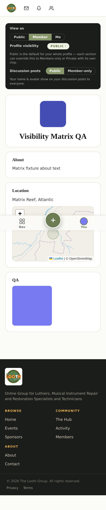
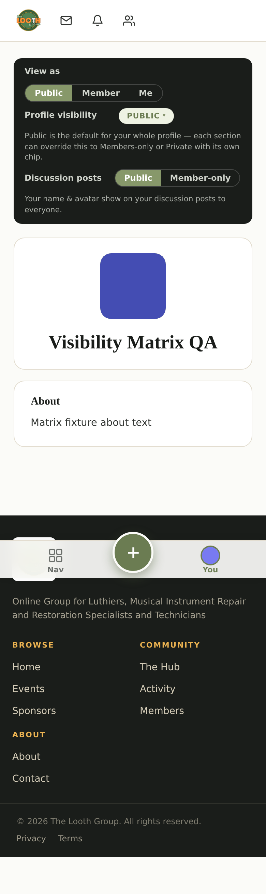
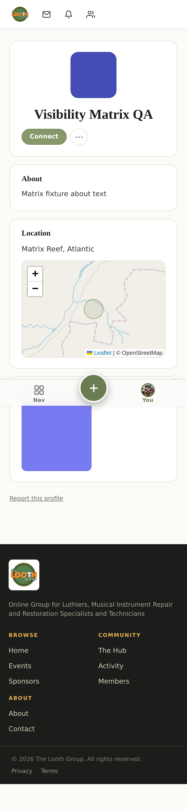
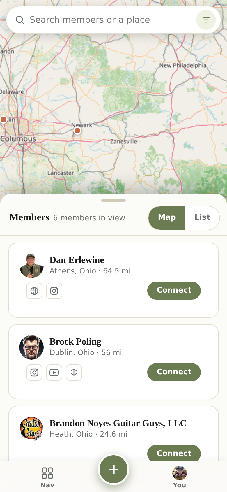

A walkthrough of what a profile is made of, who can see which parts of it, and how to check that before anyone else does.
Written for a member who has just joined and has not opened their profile yet. Nothing here needs doing in order — but the privacy section is the one worth reading properly.
On a computer, your name sits at the top right of every page. Open that menu and choose My Profile.
On a phone there is no menu up there — the bar along the bottom of the screen is how you move around, and the You tab on the right is your profile.
There is no separate “edit profile” screen to find. When you are looking at your own profile, you are looking at the editing tools — that is why the page says so at the top:
Click your name, your tagline or your photo and it becomes editable where it sits. Nothing needs saving separately.
A profile is built from sections — About, Instruments, Skills, Music, Location and so on. You choose which ones you want.
Under your name there is a Your layout row that tells you how many sections you are showing, with a ＋ Sections button. There is a second, identical opener as a dashed ＋ Add a section card at the very bottom of your profile — because that is usually where you are when you think “I want one more”.
Either one opens the Sections panel. Drag a section in, or just tap it.
On a wide screen the panel is not a pop-up at all — it sits permanently down the side, and your profile lays out in columns beside it.
Privacy on Looth is set in two places, and it helps to know which is which — this is the part members most often get wrong.
The whole profile. At the top, next to Profile visibility, one chip covers everything: Public, Members-only or Private. As the page puts it: “Public is the default for your whole profile — each section can override this to Members-only or Private with its own chip.”
One section at a time. Every section carries its own small chip. Set your Instruments public and your Location members-only if that is what you want.
Location is the one section that asks you twice, because “where I am” is usually something you will share with members but not with the open internet.
You set Members see and Public sees separately — for example members see your city while the public sees nothing at all. Each side can be set to Private, State, City or a street address.
Precision is per-audience too, so you are never forced to choose between a useful map pin and your street address being public.
This one catches people out. The Discussion posts toggle in the same panel is not part of your profile's visibility.
It controls whether your name and avatar appear on posts you make in the forums. A private profile does not silently make your posts anonymous — you set that here.
You do not have to guess, and you should not have to log out to find out. The View as switch at the top of your profile shows you your own page through someone else's eyes.
View as → Member shows what a signed-in member sees.

This frame was captured full-page — the fixed bottom bar renders mid-page. Capture artifact, not a site defect. Reshoot before this guide is shown to members.View as → Public shows what the open internet sees.

This frame was captured full-page — the fixed bottom bar renders mid-page. Capture artifact, not a site defect. Reshoot before this guide is shown to members.If your profile is members-only, a logged-out visitor does not get a broken page or a blank one.
They get a short screen explaining that the profile is members-only, with the option to sign in or join. Your name is still shown; nothing else is.
Signed-in members see your profile normally, with none of the editing controls you see on your own.

This frame was captured full-page — the fixed bottom bar renders mid-page. Capture artifact, not a site defect. Reshoot before this guide is shown to members.Filling in the Filterable sections is what puts you in front of other members.
The member directory lets people browse and filter by the same vocabulary those sections tag you with — so an empty Instruments section mostly means not turning up in other people's searches.
